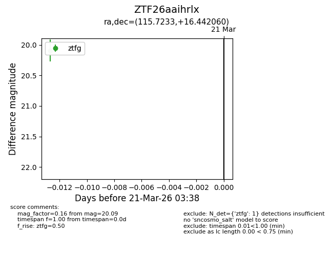
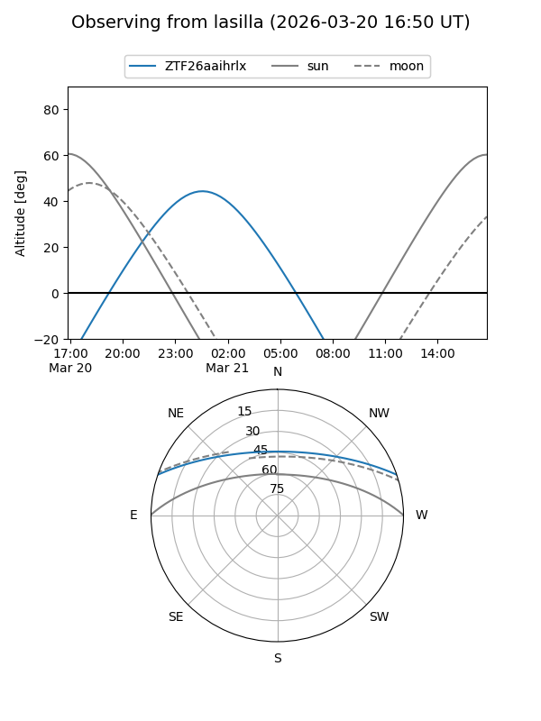
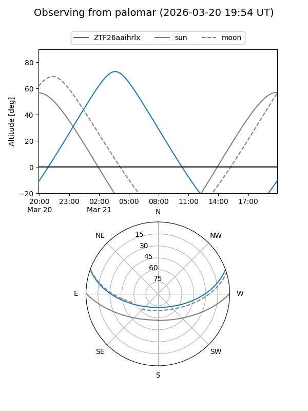

ZTF26aaihrlx
Target ZTF26aaihrlx at 2026-03-21 03:42
Aliases and brokers:
FINK: link
Lasair: link
ALeRCE: link
alt names
ZTF26aaihrlx (ztf,fink_ztf)
Coordinates:
equatorial (ra, dec) = 115.7233,+16.44206
equatorial (HMS+DMS) = 07:42:53.60,+16:26:31.42
galactic (l, b) = (203.5470,+18.60876)
Flags:
Photometry:
last ztfg=20.09
1 ztfg detections
Lightcurve

Visibility


Additional plots